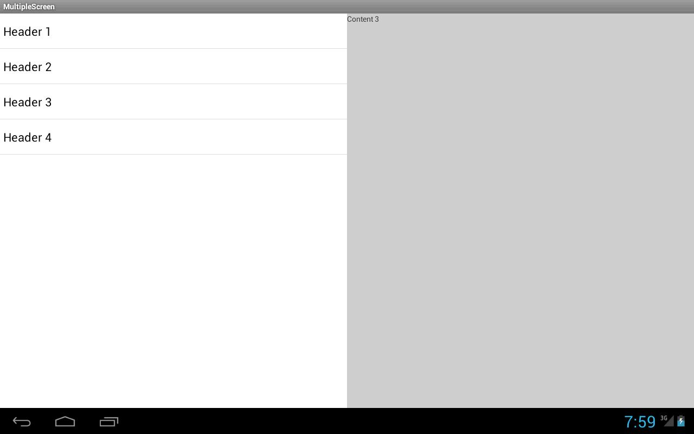
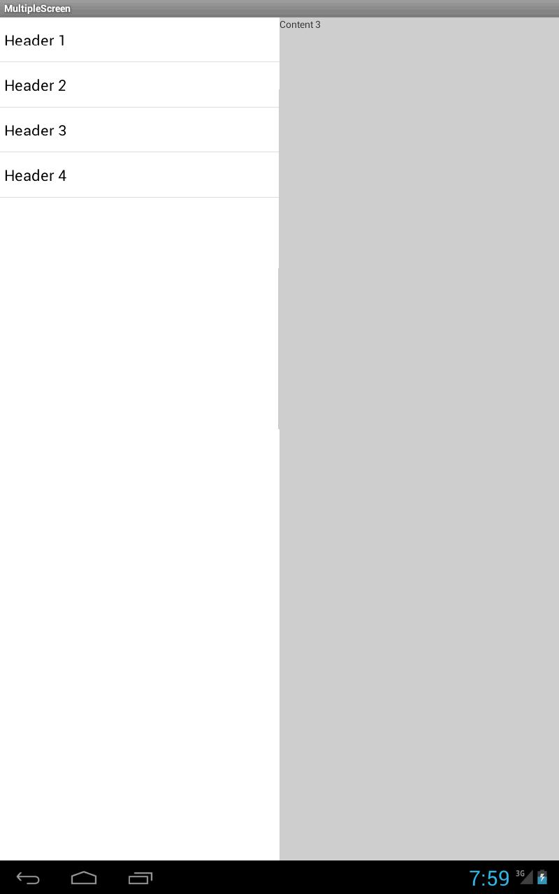
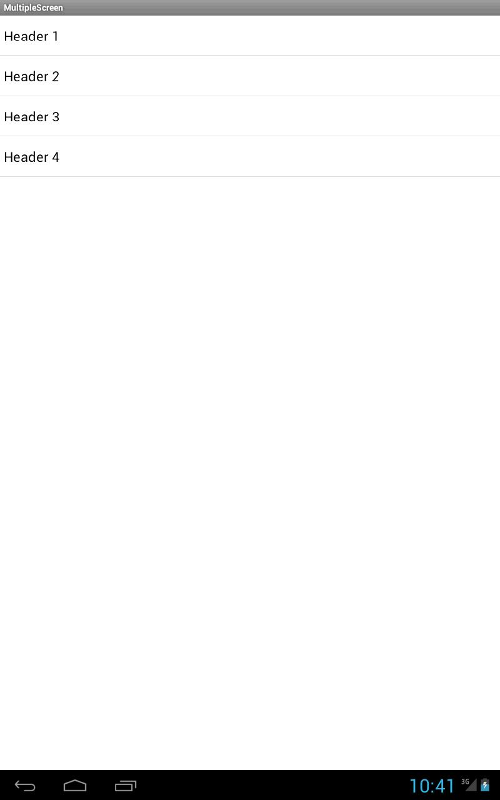
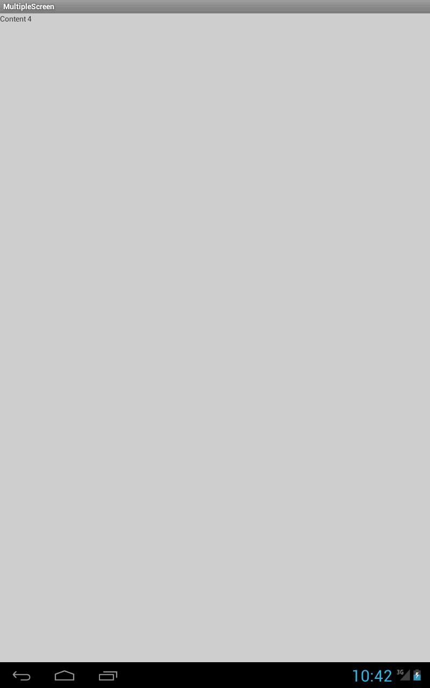
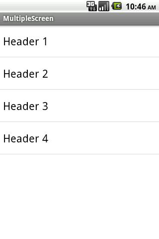
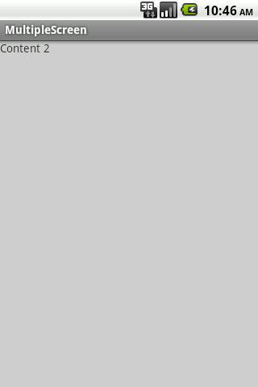
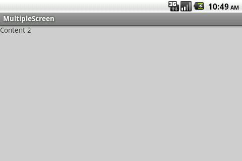
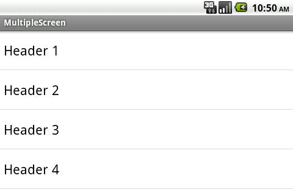

В этом уроке:
- учитываем ориентацию и размер экрана в работе приложения
На странице фрагмента на официальном сайте приводятся куски кода приложения. Это приложение отображает список заголовков статей и содержимое выбранной статьи, а его вид зависит от ориентации экрана. В горизонтальной ориентации, оно отображает и заголовки и содержимое(два фрагмента в одном Activity). В вертикальной ориентации заголовки и содержимое отображаются на разных экранах (два фрагмента разделены по двум Activity).
Пример достаточно полезен, и я решил, что имеет смысл разобрать его детально. Я немного поменяю и сокращу код, но общий смысл конструкции останется неизменным. Также, думаю, будет полезным, если мы создадим приложение так, что оно будет запускаться на версиях более ранних, чем третья. Ну и в довесок сделаем так, чтобы оно работало адекватно на экранах разных размеров.
Соответственно урок состоит из трех частей.
1. Приложение, отображающее слева заголовки, а справа – содержимое
2. Добавляем учет ориентации. При вертикальной будем отображать заголовки на первом экране, а содержимое на втором.
3. Добавляем учет размера экрана. Для небольших экранов в любой ориентации будем отображать заголовки на первом экране, а содержимое на втором.
Долго думал, как назвать проект. Решил – MultipleScreen.
Создадим проект:
Project name: P1151_MultipleScreen
Build Target: Android 4.0
Application name: MultipleScreen
Package name: ru.startandroid.develop.p1151multiplescreen
Create Activity: MainActivity
Добавим строки в strings.xml:
<string-array name="headers">
<item>Header 1</item>
<item>Header 2</item>
<item>Header 3</item>
<item>Header 4</item>
</string-array>
<string-array name="content">
<item>Content 1</item>
<item>Content 2</item>
<item>Content 3</item>
<item>Content 4</item>
</string-array>Два массива – заголовки и содержимое.
Не забывайте, что мы используем библиотеку v4, чтобы наше приложение с фрагментами работало на старых версиях.
Создаем фрагмент, который будет отображать список заголовков
TitlesFragment.java:
package ru.startandroid.develop.p1151multiplescreen;
import android.app.Activity;
import android.os.Bundle;
import android.support.v4.app.ListFragment;
import android.view.View;
import android.widget.ArrayAdapter;
import android.widget.ListView;
public class TitlesFragment extends ListFragment {
public interface onItemClickListener {
public void itemClick(int position);
}
onItemClickListener listener;
@Override
public void onCreate(Bundle savedInstanceState) {
super.onCreate(savedInstanceState);
ArrayAdapter<String> adapter = new ArrayAdapter<String>(getActivity(),
android.R.layout.simple_list_item_1, getResources()
.getStringArray(R.array.headers));
setListAdapter(adapter);
}
@Override
public void onAttach(Activity activity) {
super.onAttach(activity);
listener = (onItemClickListener) activity;
}
@Override
public void onListItemClick(ListView l, View v, int position, long id) {
super.onListItemClick(l, v, position, id);
listener.itemClick(position);
}
}Класс наследует ListFragment для удобства работы со списком.
onItemClickListener – интерфейс, который будет наследовать Activity. Подробно эту схему мы разбирали в Уроке 106. Интерфейс имеет метод itemClick, который фрагмент будет вызывать при выборе элемента списка.
В onCreate создаем адаптер с заголовками и передаем его списку.
В onAttach записываем Activity (к которому присоединен фрагмент) в listener. Разумеется, это Activity должно реализовывать интерфейс onItemClickListener.
В onListItemClick, мы через listener посылаем в Activity данные о выбранном элементе.
Т.е. этот фрагмент покажет нам заголовки и уведомит Activity о том, какой из них был выбран.
Создаем второй фрагмент, для отображения содержимого.
layout-файл details.xml:
<?xml version="1.0" encoding="utf-8"?>
<FrameLayout
xmlns:android="http://schemas.android.com/apk/res/android"
android:layout_width="match_parent"
android:layout_height="match_parent"
android:background="#cccccc">
<TextView
android:id="@+id/tvText"
android:layout_width="wrap_content"
android:layout_height="wrap_content">
</TextView>
</FrameLayout>TextView, который будет отображать содержимое.
Класс DetailsFragment.java:
package ru.startandroid.develop.p1151multiplescreen;
import android.os.Bundle;
import android.support.v4.app.Fragment;
import android.view.LayoutInflater;
import android.view.View;
import android.view.ViewGroup;
import android.widget.TextView;
public class DetailsFragment extends Fragment {
public static DetailsFragment newInstance(int pos) {
DetailsFragment details = new DetailsFragment();
Bundle args = new Bundle();
args.putInt("position", pos);
details.setArguments(args);
return details;
}
int getPosition() {
return getArguments().getInt("position", 0);
}
@Override
public View onCreateView(LayoutInflater inflater, ViewGroup container,
Bundle savedInstanceState) {
View v = inflater.inflate(R.layout.details, container, false);
TextView tv = (TextView) v.findViewById(R.id.tvText);
tv.setText(getResources().getStringArray(R.array.content)[getPosition()]);
return v;
}
}Метод newInstance создает экземпляр фрагмента и записывает в его атрибуты число, которое пришло на вход методу. Это число будет содержать позицию выбранного элемента из списка заголовков.
Метод getPosition достает из аргументов позицию.
onCreateView создает View, находим в нем TextView, и помещает в этот TextView содержимое, соответствующее позиции.
Для нас тут новыми являются аргументы фрагмента. Они могут быть заданы строго до того, как фрагмент будет присоединен к какому либо Activity, т.е., обычно, сразу после создания фрагмента. Они хранятся в фрагменте даже после того, как он был пересоздан в результате, например, смены ориентации экрана. Метод setArguments позволяет записать аргументы, а getArguments – считать.
Этот фрагмент при создании читает содержимое по переданной ему позиции и выводит в TextView.
Настраиваем Activity. layout-файл main.xml:
<?xml version="1.0" encoding="utf-8"?>
<LinearLayout
xmlns:android="http://schemas.android.com/apk/res/android"
xmlns:tools="http://schemas.android.com/tools"
android:id="@+id/LinearLayout1"
android:layout_width="match_parent"
android:layout_height="match_parent"
android:orientation="horizontal">
<fragment
android:id="@+id/titles"
android:name="ru.startandroid.develop.p1151multiplescreen.TitlesFragment"
android:layout_width="wrap_content"
android:layout_height="match_parent"
android:layout_weight="1">
</fragment>
<FrameLayout
android:id="@+id/cont"
android:layout_width="match_parent"
android:layout_height="match_parent"
android:layout_weight="1">
</FrameLayout>
</LinearLayout>Слева будет TitlesFragment с заголовками, а в правой части будем помещать DetailsFragment в контейнер FrameLayout.
MainActivity.java:
package ru.startandroid.develop.p1151multiplescreen;
import ru.startandroid.develop.p1151multiplescreen.TitlesFragment.onItemClickListener;
import android.os.Bundle;
import android.support.v4.app.FragmentActivity;
public class MainActivity extends FragmentActivity implements
onItemClickListener {
int position = 0;
@Override
public void onCreate(Bundle savedInstanceState) {
super.onCreate(savedInstanceState);
setContentView(R.layout.main);
if (savedInstanceState != null)
position = savedInstanceState.getInt("position");
showDetails(position);
}
void showDetails(int pos) {
DetailsFragment details = (DetailsFragment) getSupportFragmentManager()
.findFragmentById(R.id.cont);
if (details == null || details.getPosition() != pos) {
details = DetailsFragment.newInstance(pos);
getSupportFragmentManager().beginTransaction()
.replace(R.id.cont, details).commit();
}
}
@Override
public void itemClick(int position) {
this.position = position;
showDetails(position);
}
@Override
protected void onSaveInstanceState(Bundle outState) {
super.onSaveInstanceState(outState);
outState.putInt("position", position);
}
}Activity наследует интерфейс onItemClickListener, чтобы получать оповещения о выбранных элементах от фрагмента со списком заголовков. Поле position будет хранить последний выбранный элемент. Это поле сохраняем (onSaveInstanceState) и читаем (savedInstanceState в onCreate) при пересоздании Activity.
В onCreate вызываем метод, который покажет последнюю выбранную запись.
Метод showDetails получает на вход позицию, ищет DetailsFragment. Если не находит или находит но, отображающий данные по другой позиции, то создает фрагмент заново, передает ему нужную позицию и размещает в контейнер.
itemClick – метод, вызываемый из фрагмента со списком заголовков. В нем мы получаем позицию выбранного элемента в списке. Пишем ее в поле position и вызываем showDetails, который отобразит нужные данные на экране.
Все сохраняем, запускаем приложение.
Выберем какой-либо пункт

Повернем экран

все работает, как и должно.
Теперь добавим учет ориентации экрана. В вертикальной ориентации MainActivity будет отображать только заголовки. Фрагмент с содержимым вынесем в отдельное DetailsActivity
DetailsActivity.java:
package ru.startandroid.develop.p1151multiplescreen;
import android.content.res.Configuration;
import android.os.Bundle;
import android.support.v4.app.FragmentActivity;
public class DetailsActivity extends FragmentActivity {
@Override
protected void onCreate(Bundle savedInstanceState) {
super.onCreate(savedInstanceState);
if (getResources().getConfiguration().orientation
== Configuration.ORIENTATION_LANDSCAPE) {
finish();
return;
}
if (savedInstanceState == null) {
DetailsFragment details = DetailsFragment.newInstance(getIntent().getIntExtra("position", 0));
getSupportFragmentManager().beginTransaction().add(android.R.id.content, details).commit();
}
}
}Код из рубрики: «все слова вроде знакомые, а че сказать хотел - непонятно». Давайте разбираться.
Представим ситуацию. Мы поворачиваем планшет вертикально, у нас отобразятся только заголовки. Мы нажимаем на какой-либо заголовок и переходим на DetailsActivity, которое покажет нам содержимое (средствами DetailsFragment, разумеется). Т.е. мы имеем вертикальную ориентацию и видим содержимое. Теперь поворачиваем планшет горизонтально. Что будет? DetailsActivity отобразится во весь горизонтальный экран и покажет содержимое. Но наша концепция гласит, что в горизонтальной ориентации приложение должно показывать и содержимое и заголовки, ширина экрана ведь позволяет это сделать. А, значит, нам надо вернуться в MainActivity.
Смотрим первый фрагмент кода. Приложение определяет, что ориентация горизонтальная и в этом случае просто закрывает Activity. И т.к. это DetailsActivity у нас будет вызвано из MainActivity, то после finish мы попадаем в MainActivity и видим то, что нужно – и заголовки, и содержимое. Причем MainActivity хранит номер выбранного заголовка (независимо от ориентации) и содержимое отобразится то же самое, что было в DetailsActivity.
Смотрим второй фрагмент. Мы проверяем, что savedInstanceState == null – это означает, что Activity создается первый раз, а не пересоздается после смены ориентации экрана. Далее мы создаем фрагмент DetailsFragment, используя позицию из интента, и помещаем его в Activity.
Почему создаем фрагмент только при создании Activity и при пересоздании - нет? Потому что система сама умеет пересоздавать существующие фрагменты при поворотах экрана, сохраняя при этом аргументы фрагмента. И нам совершенно незачем в данном случае пересоздавать фрагмент самим.
Причем тут надо понимать, что система будет создавать фрагмент вовсе не через метод newInstance. Она просто не знает такой метод. Система использует конструктор. И мы ничего не можем передать в этот конструктор, чтобы повлиять на поведение или содержимое фрагмента. Именно в таких случаях выручают аргументы. Система сохраняет аргументы фрагмента при его пересоздании. И при каждом пересоздании наш фрагмент будет знать, какое содержимое он должен отобразить, т.к. использует аргументы при создании экрана в методе onCreateView.
Не забудьте прописать Activity в манифесте.
Создадим папку res/layout-land и скопируем туда основной layout - res/layout/main.xml. Т.е. при горизонтальной ориентации у нас все останется, как есть.
А res/layout/main.xml поменяем следующим образом:
<?xml version="1.0" encoding="utf-8"?>
<LinearLayout
xmlns:android="http://schemas.android.com/apk/res/android"
xmlns:tools="http://schemas.android.com/tools"
android:id="@+id/LinearLayout1"
android:layout_width="match_parent"
android:layout_height="match_parent"
android:orientation="horizontal">
<fragment
android:id="@+id/titles"
android:name="ru.startandroid.develop.p1151multiplescreen.TitlesFragment"
android:layout_width="match_parent"
android:layout_height="match_parent">
</fragment>
</LinearLayout>Мы удалили контейнер для содержимого, оставили только заголовки. Такой экран мы получим в вертикальной ориентации.
Меняем MainActivity.java:
package ru.startandroid.develop.p1151multiplescreen;
import ru.startandroid.develop.p1151multiplescreen.TitlesFragment.onItemClickListener;
import android.content.Intent;
import android.os.Bundle;
import android.support.v4.app.FragmentActivity;
public class MainActivity extends FragmentActivity implements
onItemClickListener {
int position = 0;
boolean withDetails = true;
@Override
public void onCreate(Bundle savedInstanceState) {
super.onCreate(savedInstanceState);
setContentView(R.layout.main);
if (savedInstanceState != null)
position = savedInstanceState.getInt("position");
withDetails = (findViewById(R.id.cont) != null);
if (withDetails)
showDetails(position);
}
void showDetails(int pos) {
if (withDetails) {
DetailsFragment details = (DetailsFragment) getSupportFragmentManager()
.findFragmentById(R.id.cont);
if (details == null || details.getPosition() != pos) {
details = DetailsFragment.newInstance(pos);
getSupportFragmentManager().beginTransaction()
.replace(R.id.cont, details).commit();
}
} else {
startActivity(new Intent(this, DetailsActivity.class).putExtra("position", position));
}
}
@Override
public void itemClick(int position) {
this.position = position;
showDetails(position);
}
@Override
protected void onSaveInstanceState(Bundle outState) {
super.onSaveInstanceState(outState);
outState.putInt("position", position);
}
}Изменений немного. Добавляется поле withDetails, которое будет сообщать нам: показывает Activity заголовки с содержимым или без. В нашем случае это будет совпадать соответственно с горизонтальной и вертикальной ориентацией.
В onCreate мы задаем значение withDetails с помощью проверки наличия контейнера для фрагмента с содержимым. Если у нас должно отображаться содержимое, то вызываем метод showDetails и передаем ему позицию. Если содержимое не должно отображаться, то ничего не делаем, показываем только заголовки.
В методе showDetails мы смотрим withDetails. Если содержимое должно быть показано здесь же, то работает старый алгоритм, мы создаем фрагмент. Если же содержимое должно быть показано в отдельном Activity, то вызываем DetailsActivity и передаем ему позицию.
Все сохраняем, запускаем приложение.
Выбираем заголовок
Поворачиваем экран

видим только заголовки
Выбираем заголовок

видим содержимое в новом Activity
Поворачиваем экран

видим содержимое и заголовки
Осталось подстроить работу приложения под маленькие экраны. Напомню, что на мелких экранах мы при любой ориентации будем разделять заголовки и содержимое по разным Activity. Размер экрана можно определять по-разному. Я буду считать большими экраны large и xlarge. Для этих экранов логика остается текущая, для остальных немного изменим.
Ориентация экрана бывает горизонтальная (land) и вертикальная (port). Экраны мы будем различать: мелкие, large и xlarge. Итого у нас получается 6 комбинаций экранов.
1) мелкий, port
2) large, port
3) xlarge, port
4) мелкий, land
5) large, land
6) xlarge, land
И у нас уже есть два варианта файла main.xml – "заголовки с содержимым" и "только заголовки".
Надо сопоставить комбинации и варианты.
Вариант "заголовки с содержимым" будем использовать в комбинациях 5,6 (большие экраны в горизонтальной ориентации)
Вариант "только заголовки" подходит к комбинациям 1,2,3,4 (мелкие экраны в любой ориентации и большие экраны в вертикальной ориентации).
Создаем layout-папки под эти комбинации, и помещаем в них варианты экранов.
Папка res/layout-large-land. Это комбинация 5. Сюда помещаем вариант main.xml, который "заголовки с содержимым".
Папка res/layout-xlarge-land. Это комбинация 6. Сюда помещаем вариант main.xml, который "заголовки с содержимым".
Папка res/layout. Это все остальные комбинации (1,2,3,4). Сюда помещаем вариант main.xml, который "только заголовки".
Т.е. в итоге получается, что мы в папки layout-large-land и layout-xlarge-land копируем файл из layout-land, и удаляем папку layout-land. Папку layout не трогаем, там все ок.
Осталось немного изменить DetailsActivity.java:
package ru.startandroid.develop.p1151multiplescreen;
import android.content.res.Configuration;
import android.os.Bundle;
import android.support.v4.app.FragmentActivity;
public class DetailsActivity extends FragmentActivity {
@Override
protected void onCreate(Bundle savedInstanceState) {
super.onCreate(savedInstanceState);
if (getResources().getConfiguration().orientation
== Configuration.ORIENTATION_LANDSCAPE
& isLarge()) {
finish();
return;
}
if (savedInstanceState == null) {
DetailsFragment details = DetailsFragment.newInstance(getIntent()
.getIntExtra("position", 0));
getSupportFragmentManager().beginTransaction()
.add(android.R.id.content, details).commit();
}
}
boolean isLarge() {
return (getResources().getConfiguration().screenLayout
& Configuration.SCREENLAYOUT_SIZE_MASK)
>= Configuration.SCREENLAYOUT_SIZE_LARGE;
}
}Метод isLarge определяет, большой экран или нет. Если раньше мы в горизонтальной ориентации сразу закрывали это Activity, то теперь будем делать это только для больших экранов. А на остальных содержимое будет отображаться в горизонтальной ориентации.
Все сохраняем и запускаем приложение.
Скрины с планшета приводить не буду. Они полностью повторят предыдущие.
А на смартфоне с маленьким экраном будет так:

выбираем заголовок

поворачиваем экран

Жмем назад и попадаем к заголовкам

Немаленький такой материал получился. Но, вроде, все рассказал, чего хотел.
На всякий случай напоминаю, что архитектура решения не моя. Я разбирал пример, который немного поменял. Я перенес логику из фрагмента заголовков в главное Activity и убрал использование режима выбора и выделение элементов списка. Зато добавил работу с квалификаторами, которые позволили нам менять поведение приложения в зависимости от размера и ориентации экрана.
Если остались непонятные моменты – велкам на форум, будем решать.